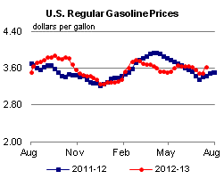
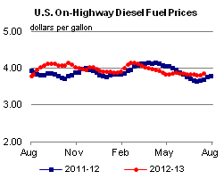
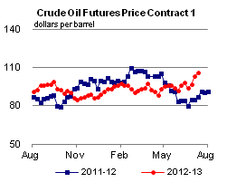
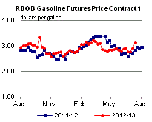
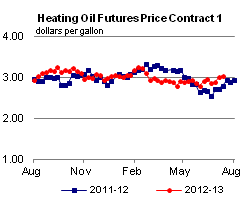
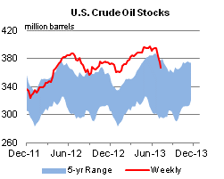
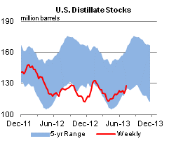
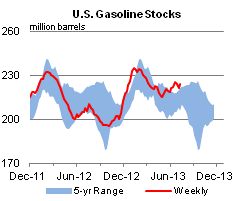
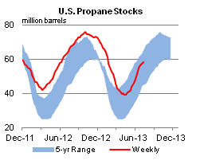

Released: July 17, 2013
Next Release: July 24, 2013
U.S. Refineries are Running at High Levels
Crude runs at U.S. refineries have increased steadily since early March to reach some of the highest levels on record. At 16.1 million barrels per day (bbl/d) for the week ending July 5, U.S. crude oil runs were the highest for any week since 2007. This level represented a 2.1-million-bbl/d increase from the first week of March, the low point for the first six months of 2013. While the increase in crude runs since March reflects a particularly strong rebound from spring maintenance, an underlying combination of recent refinery capacity expansions and relatively healthy margins helped drive the absolute level of runs to a multiyear high.
Both the steep ramp-up in runs and the high absolute level in early July were driven by refiners in the Gulf Coast (PADD 3) and Midwest (PADD 2) (Figure 1). The Gulf Coast is home to more than 50 percent of U.S. refining capacity, and thus is often the key determinant of U.S. refining trends. Typically, the Gulf Coast, along with the West Coast, sees the country's earliest refinery turnaround season. In 2013, Gulf Coast runs reached their seasonal nadir the week ending March 1 at just under 6.9 million bbl/d, as several big facilities in the region underwent maintenance, including Lyondell's Houston refinery, Western's El Paso refinery, and Valero's Norco, Louisiana, facility. As facilities began to return from maintenance, Gulf Coast runs increased significantly. In each year from 2008 to 2012, Gulf Coast refiners ramped up crude runs by an average of 860,000 bbl/d from their first-half low point (which ranged anywhere from late January to early April) through the first week of July. This year, however, Gulf Coast runs increased by a staggering 1.6 million bbl/d, to reach 8.5 million bbl/d for the week ending July 5, down only 30,000 bbl/d from the record set the previous week.
{kind=link}
To a large extent, record high Gulf Coast crude runs can be attributed to the new distillation capacity at Motiva's Port Arthur plant and relatively robust margins for the area's refiners. In June 2012, Motiva commissioned a new 325,000-bbl/d crude distillation unit at the refinery, but shortly thereafter, it encountered operational difficulties and was shut down for several months. With that expansion now fully operational, Gulf Coast operating distillation capacity stood at more than 8.7 million bbl/d as of January 1, 2013, up more than 180,000 bbl/d from a year earlier. In addition to higher capacity, Gulf Coast refineries are also running at very high levels of utilization, nearly 94 percent on average for the four weeks ending July 5.
While Midwest crude runs are not at record levels like the Gulf Coast, they also saw a sizable increase in recent weeks. A series of refinery outages hit the Midwest market in the middle of the second quarter, lowering crude oil runs to levels not seen since late 2010. As refiners returned from outages through June, Midwest runs ramped up steadily. This included the return of the Northern Tier St. Paul and Phillips 66 Wood River facilities. Additionally, trade press reports indicate BP ramped up production at its Whiting, Indiana, refinery to near full throttle of 405,000 bbl/d in June after the plant had been running at low rates for more than two years during the installation of a new coker designed to run heavy Canadian crude. While most of that refinery's distillation capacity is now on line, the coker is not expected to start up until later this year. In the meantime, the refinery is expected to satisfy its increased runs with light sweet crude. In sum, Midwest crude runs increased from 3.0 million bbl/d the week ending May 24 to more than 3.4 million bbl/d the week ending July 5.
Higher runs of light sweet crude at BP Whiting, and the seasonal increase in Midwest runs in general, are likely contributing to the recent narrowing of the Brent-WTI crude oil price spread to the lowest levels since late 2010. However, that spread has fallen below $3 per barrel recently, which has temporarily eroded some of Midwest refiners' competitive advantage. Earlier this week, with Brent priced at $109.29 per barrel and WTI at $105.88, the spread was $3.37. A narrower spread is likely to keep Midwest runs more muted than during times when the spread approached $30 per barrel and Midwest utilization neared maximum levels. But in the medium term, the Brent-WTI is likely to widen a bit from its current level. In the July Short-Term Energy Outlook, EIA projections have WTI's discount to Brent averaging $6.75 per barrel during the second half of 2013. While this projected spread is not as wide as at some points during the last two years, when combined with additions to upgrading capacity both in the Midwest and Gulf Coast that have increased the competitiveness of the U.S. refining base, it should generally make running crude profitable. In the current forecast, third-quarter crude runs average 15.5 million bbl/d, an increase of more than 200,000 bbl/d from both second-quarter 2013 and third-quarter 2012. Additionally, utilization rates on the Gulf Coast will likely drift downward from their current 94 percent with the arrival of autumn. While refiners can run at high rates and stress their operations for weeks or even months, utilization typically does not exceed about 90 percent over an extended period of time.
Gasoline and diesel fuel prices both increase
The U.S. average retail price of regular gasoline increased 15 cents to $3.64 per gallon as of July 15, 2013, up 21 cents from last year at this time. This is the largest one-week increase since February 2013. Regionally, the largest increase came in the Midwest, where the price is up 23 cents to $3.64 per gallon. The Gulf Coast price is $3.44 per gallon, 15 cents higher than last week, and on the East Coast the price is up 13 cents to $3.59 per gallon. On the West Coast the price is $3.93 per gallon, a nickel higher than last week. Rounding out the regions, the Rocky Mountain price increased less than a penny to remain at $3.61 per gallon.
The national average diesel fuel price increased four cents to $3.87 per gallon, 17 cents higher than last year at this time. The East Coast, Gulf Coast, and West Coast prices all increased five cents, to $3.88, $3.80, and $4.00 per gallon, respectively. The Midwest price is now $3.85 per gallon, three cents higher than last week. Rounding out the regions, the Rocky Mountain price is up two cents to $3.83 per gallon.
Propane inventories gain
Total U.S. inventories of propane increased 0.6 million barrels from last week to end at 58.0 million barrels, but are 6.8 million barrels (10.5 percent) lower than the same period a year ago. The Rocky Mountain/West Coast region led the gain with 0.4 million barrels, while Gulf Coast and Midwest stocks each increased by 0.2 million barrels. East Coast stocks decreased by 0.2 million barrels. Propylene non-fuel-use inventories represented 5.1 percent of total propane inventories.
Text from the previous editions of This Week In Petroleum is accessible through a link at the top right-hand corner of this page.
|  |  | ||||||
| Retail Data | Change From Last | Retail Data | Change From Last | ||||
| 07/15/13 | Week | Year | 07/15/13 | Week | Year | ||
| Gasoline | 3.639 | Diesel Fuel | 3.867 | ||||
|  |  | ||||||||||||||||||||||||||
|
 | ||||||||||||||||||||||||||
| *Note: Crude Oil Price in Dollars per Barrel. | |||||||||||||||||||||||||||
|  |  | ||||||
|  |  | ||||||
| Stocks Data | Change From Last | Stocks Data | Change From Last | ||||
| 07/12/13 | Week | Year | 07/12/13 | Week | Year | ||
| Crude Oil | 367.0 | Distillate | 127.7 | ||||
| Gasoline | 224.1 | Propane | 57.966 | ||||